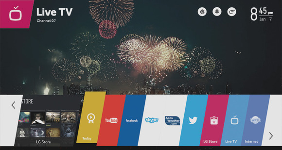

LG Electronics introduced a new smart TV powered by webOS 2.0 at CES 2015, which kicks off on January 6 in Las Vegas.
 The company acquired the source code, development infrastructure, and related documents of webOS from HP in February 2013. The company introduced a webOS-powered smart TV first time at CES 2014. LG has sold 5 million webOS Smart TVs globally since March. The latest offering will compete with arch-rival Samsung's own smart TV powered by Tizen, which will also be on display at the upcoming tradeshow.